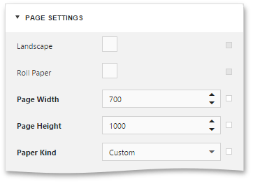
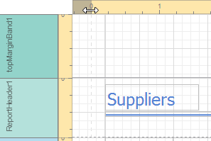

Adjust Page Layout Settings
In the Web Report Designer, you can change page layout settings before you print a report.
To specify the report's page settings, switch to the Properties Panel, and in the Report Controls drop-down list, select the report. Expand the Page Settings category and adjust the following page settings.

Paper Kind
You can select one the predefined paper sizes or specify a custom paper size. To create your own paper size, set the Paper Kind property to Custom, and then specify the Page Width and Page Height properties.

Margins
To modify page margins, specify the Margins property or move sliders on the horizontal and vertical ruler in the report's Design Surface.

The margin values are expressed in the report's measurement units.
Roll Paper
If this flag is enabled, the document is supposed to be printed on a roll of paper (i.e., as a single uninterrupted page). This setting will affect the corresponding page options (such as the page number values), as well as disable page-specific commands in the Print Preview (i.e., the Navigation and Multipage Mode options).
Landscape
This flag determines whether the page orientation is Landscape (when enabled) or Portrait (when disabled).